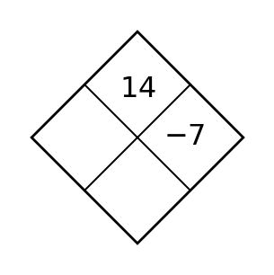
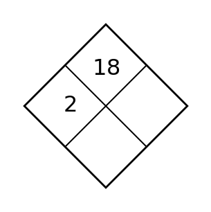
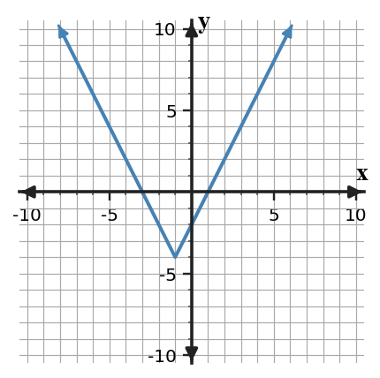
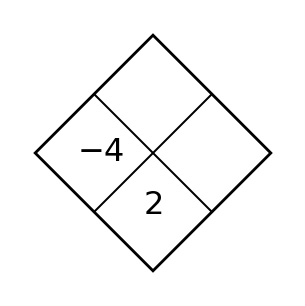
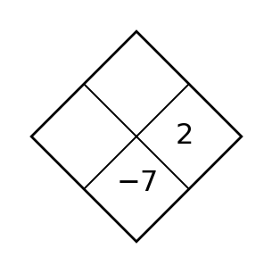
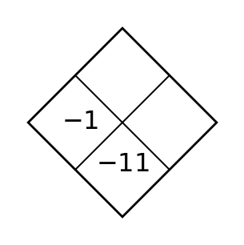

Section 8.1 — Day 1
For the table, state whether the pattern is most likely linear, quadratic, or exponential, and name the clue you used.
| $x$ | $0$ | $1$ | $2$ | $3$ | $4$ |
|---|---|---|---|---|---|
| $y$ | $4$ | $7$ | $10$ | $13$ | $16$ |
For each table, decide whether first differences, second differences, or ratios are the most useful evidence.
| $x$ | 0 | 1 | 2 | 3 | 4 |
|---|---|---|---|---|---|
| A | 5 | 9 | 13 | 17 | 21 |
| B | 2 | 6 | 18 | 54 | 162 |
| C | 1 | 4 | 9 | 16 | 25 |
Spiral: Solve or interpret the quadratic situation for Quadratic Modeling and Optimization. Show the algebra that supports your answer.
Complete the table, then estimate the maximum of $R(p)=-2p^2+28p+10$.
| $p$ | 5 | 6 | 7 | 8 |
|---|---|---|---|---|
| $R(p)$ |
Formative Spiral: Use the diamond. The top number is the product of the two side numbers, and the bottom number is their sum. Fill in the missing cell(s).

Section 8.1 — Day 2
Use the four graphs. For each panel, name one feature that could help distinguish its family without using only its shape.

Decide whether each generator produces a geometric sequence. Explain one choice.
- Start at 6; multiply by 4 each step.
- Start at 6; add 4 each step.
- Start at 6; multiply by 0.75 each step.
- Start at 6; add 4, then add 8, then add 12.
Spiral: Given zeros $2$ and $5$, write two different equivalent factored equations.
Formative Spiral: Use the diamond. The top number is the product of the two side numbers, and the bottom number is their sum. Fill in the missing cell(s).

Section 8.1 — Day 3
The table gives savings after each month. Find the monthly change, write a linear model, and predict the savings after $12$ months.
| Month | $0$ | $1$ | $2$ | $3$ |
|---|---|---|---|---|
| Savings | $120$ | $155$ | $190$ | $225$ |
For the sequence 2, 8, 3y+5, find the value of y that would make the sequence arithmetic and the value of y that would make it geometric. Show the comparison you used.
Spiral: Solve or interpret the quadratic situation for Completing the Square. Show the algebra that supports your answer.
Rewrite $y=x^2-10x+18$ in vertex form and name the vertex.
Formative Spiral: Use the diamond. The top number is the product of the two side numbers, and the bottom number is their sum. Fill in the missing cell(s).

Section 8.2 — Day 1
Describe the transformation from $f(x)=x^2$ to $g(x)=(x-4)^2$.
For each equation, identify the y-intercept and decide whether the graph approaches the x-axis from above or below as x increases.
| Equation | y-intercept | Long-run behavior |
|---|---|---|
| $f(x)=4(0.5)^x$ | ||
| $g(x)=2(3)^x$ | ||
| $h(x)=8(0.8)^x$ |
Spiral: Solve or interpret the quadratic situation for Completing the Square. Show the algebra that supports your answer.
Rewrite $y=x^2-10x+18$ in vertex form and name the vertex.
Formative Spiral: Use the diamond. The top number is the product of the two side numbers, and the bottom number is their sum. Fill in the missing cell(s).

Section 8.2 — Day 2
Complete the sentence: In $g(x)=f(x)-7$, every output of $f$ is changed by ______.
Write a multiplier for each repeated percent change.
- Increase by 3%
- Decrease by 25%
- Decrease by 13%
- Increase by 2.08%
Spiral: Fill the blank: $(x-7)^2=x^2-14x+\Box$.
Formative Spiral: Use the diamond. The top number is the product of the two side numbers, and the bottom number is their sum. Fill in the missing cell(s).

Section 8.2 — Day 3
Use the graph of the transformed absolute value function. Write a possible equation and explain the role of the vertex.

A student claims that the table below is exponential decay because the values decrease. Decide whether the claim is correct and support your decision with differences or ratios.
| Time | 0 | 1 | 2 | 3 | 4 |
|---|---|---|---|---|---|
| Amount | 50 | 42 | 34 | 26 | 18 |
Spiral: Solve or interpret the quadratic situation for Quadratic Formula. Show the algebra that supports your answer.
Solve $3x^2-2x-6=0$ and round to the nearest hundredth.
Formative Spiral: Use the diamond. The top number is the product of the two side numbers, and the bottom number is their sum. Fill in the missing cell(s).

Section 8.3 — Day 1
Mr. Guo is thinking of a number. When he takes the absolute value of his number, he gets $15$. List all possible numbers and explain why there are two.
Use the blank coordinate plane to plot key points for $y=2^x$ at x-values -2, -1, 0, 1, and 2.

Spiral: Solve or interpret the quadratic situation for Solving Quadratics by Factoring. Show the algebra that supports your answer.
Write and solve a factored equation for zeros $-1$ and $8$.
Formative Spiral: Use the diamond. The top number is the product of the two side numbers, and the bottom number is their sum. Fill in the missing cell(s).

Section 8.3 — Day 2
For $y=2|x-5|$, explain what value of $x$ makes $y=0$.
Sort each data set by the equation it matches.
| $x$ | 0 | 1 | 2 |
|---|---|---|---|
| Data set A | 3 | 12 | 48 |
| Data set B | 3 | 6 | 12 |
| Data set C | 48 | 12 | 3 |
Equations: $y=3(4)^x$, $y=3(2)^x$, $y=48(0.25)^x$.
Spiral: Find $2a$ when $a=-3$.
Formative Spiral: Use the diamond. The top number is the product of the two side numbers, and the bottom number is their sum. Fill in the missing cell(s).

Section 8.3 — Day 3
Write a piecewise rule for a parking garage that charges \$5 for the first hour and \$3 per hour after the first hour, for whole hours from $1$ to $6$.
Gasoline increases from $\$4.10$ per gallon to $\$4.35$ per gallon over two months. Assuming a geometric pattern, find the monthly multiplier and monthly percent increase.
Spiral: Solve or interpret the quadratic situation for Choosing and Defending Solution Methods. Show the algebra that supports your answer.
Choose the most efficient method for $x^2-8x+5=0$ and solve.
Formative Spiral: Use the diamond. The top number is the product of the two side numbers, and the bottom number is their sum. Fill in the missing cell(s).

Section 8.4 — Day 1
In a data table comparing study time and quiz score, identify the independent variable and dependent variable.
Identify the starting value and approximate multiplier from each data table.
| Time | 0 | 1 | 2 | 3 |
|---|---|---|---|---|
| Data A | 100 | 120 | 144 | 172.8 |
| Data B | 500 | 400 | 320 | 256 |
Spiral: Solve or interpret the quadratic situation for Quadratic Modeling and Optimization. Show the algebra that supports your answer.
A ball has height $h(t)=-16t^2+40t+6$. Find when it hits the ground.
Formative Spiral: Use the diamond. The top number is the product of the two side numbers, and the bottom number is their sum. Fill in the missing cell(s).

Section 8.4 — Day 2
For a model of money in a savings account, explain why negative time is usually outside the domain.
Read the graph. Estimate the y-intercept, then use the y-values at two consecutive integer x-values to decide whether the multiplier is greater than 1 or between 0 and 1.

Spiral: Identify whether $x^2+4x+4=0$ has one or two distinct real solutions.
Formative Spiral: Use the diamond. The top number is the product of the two side numbers, and the bottom number is their sum. Fill in the missing cell(s).

Section 8.4 — Day 3
For data with outputs $5,8,14,26,50$, decide whether a linear or exponential model is more reasonable and support your answer with differences or ratios.
A savings account has $\$500$ and grows by 2.4% each year. Write a model and use it to estimate the balance after 8 years. Round to the nearest dollar.
Spiral: Solve or interpret the quadratic situation for Quadratic Modeling and Optimization. Show the algebra that supports your answer.
Find the break-even points of $P(x)=-x^2+12x-20$.
Formative Spiral: Use the diamond. The top number is the product of the two side numbers, and the bottom number is their sum. Fill in the missing cell(s).

Section 8.5 — Day 1
Match each feature to a family: constant rate of change, constant second difference, constant ratio, vertex minimum.
Label each equation as linear, quadratic, or exponential.
- $y=4x+7$
- $y=3(2)^x$
- $y=x^2-5$
- $y=120(0.85)^x$
Spiral: Solve or interpret the quadratic situation for Quadratic Modeling and Optimization. Show the algebra that supports your answer.
Complete the table, then estimate the maximum of $R(p)=-2p^2+28p+10$.
| $p$ | 5 | 6 | 7 | 8 |
|---|---|---|---|---|
| $R(p)$ |
Formative Spiral: Use the diamond. The top number is the product of the two side numbers, and the bottom number is their sum. Fill in the missing cell(s).

Section 8.5 — Day 2
State one advantage of a graph when comparing function families.
For each model, state whether the graph gets steeper as x increases or flatter as x increases.
- $y=2(3)^x$
- $y=50(0.5)^x$
- $y=7(1.1)^x$
- $y=30(0.9)^x$
Spiral: Describe one limitation of a quadratic model in a real context.
Formative Spiral: Use the diamond. The top number is the product of the two side numbers, and the bottom number is their sum. Fill in the missing cell(s).

Section 8.5 — Day 3
Compare $L(x)=4x+20$ and $E(x)=20(1.2)^x$ at $x=0,1,2,3$. Which grows faster by $x=3$?
Compare the graphs of $f(x)=2(2)^x$ and $g(x)=5(2)^x$ using y-intercepts and steepness. Use the graph as evidence.

Spiral: Solve or interpret the quadratic situation for Solving Quadratics by Factoring. Show the algebra that supports your answer.
Find the zeros and the axis of symmetry for $(x-1)(x-7)=0$.
Formative Spiral: Use the diamond. The top number is the product of the two side numbers, and the bottom number is their sum. Fill in the missing cell(s).